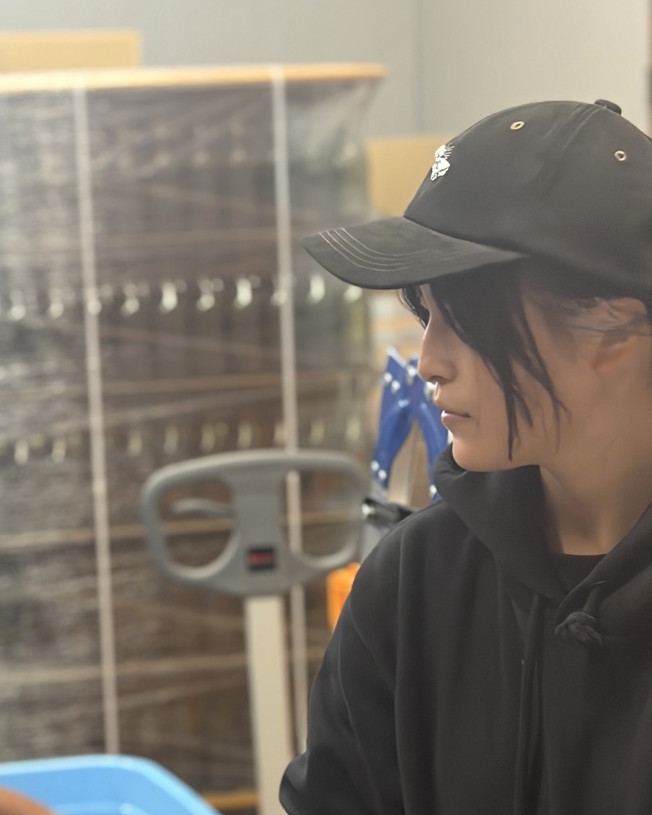

PEOPLE / 長野・原村
日達桐子
キフタトワインズ／醸造・ワイナリー運営
長野県原村にある家族経営の「キフタトワインズ（KIFUTATO WINES）」で、醸造とワイナリー運営を担う。両親の農園で育った葡萄を受け継ぎ、国内外での研鑽を重ねて2024年の自園醸造を迎えた。キフタトワインズが嘉祥窯特製のアンフォラでオレンジワインをつくる「ENSOU PROJECT」に取り組む。
原村ワイン醸造キフタトワインズENSOU地域プロジェクト
RELATED STORIES

キフタトワインズ／醸造・ワイナリー運営
長野県原村にある家族経営の「キフタトワインズ（KIFUTATO WINES）」で、醸造とワイナリー運営を担う。両親の農園で育った葡萄を受け継ぎ、国内外での研鑽を重ねて2024年の自園醸造を迎えた。キフタトワインズが嘉祥窯特製のアンフォラでオレンジワインをつくる「ENSOU PROJECT」に取り組む。